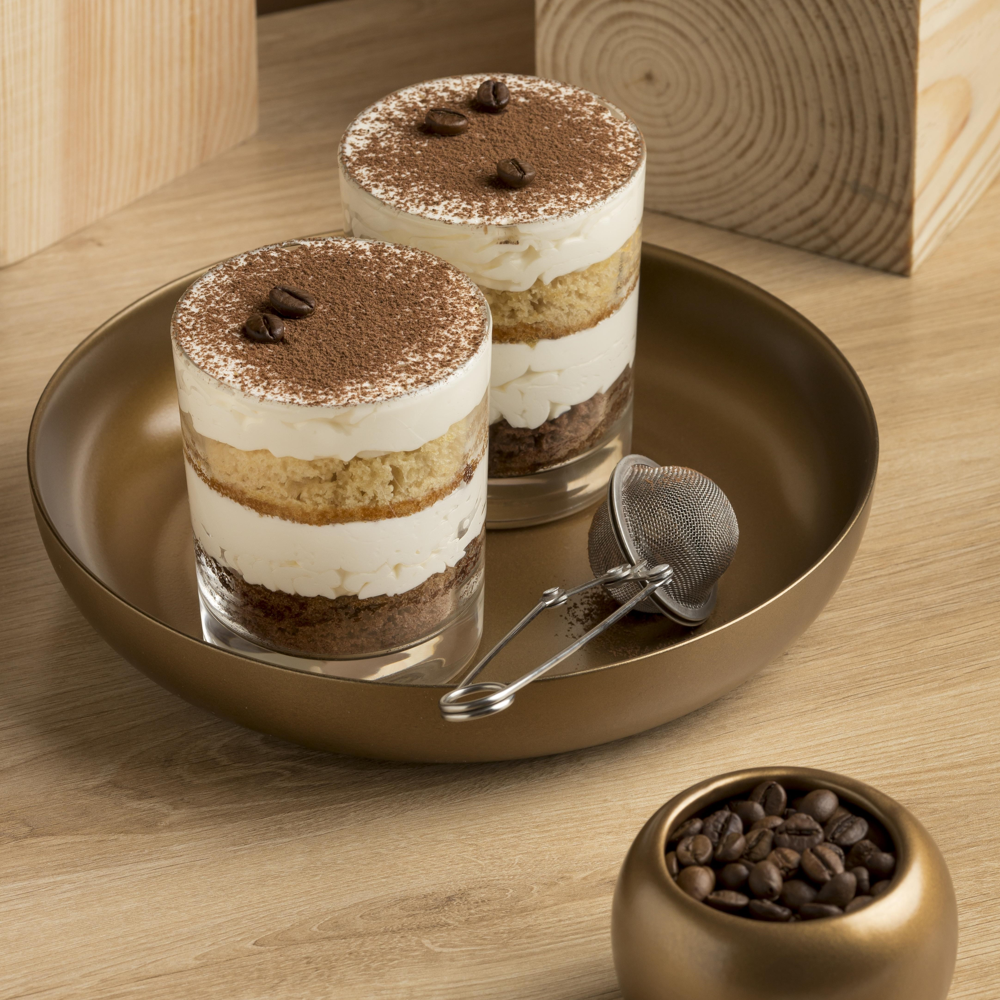

Acceuil
Nos recettes
Contactez-nous
Connexion
Vos recettes
Recette de Tiramisu

Ingredients
Cacao non sucrée
150g de sucre
250g de mascarpone
3 oeufs
18 biscuits à la cuillère
30cl de café fort froid
1 pincée de sel
Méthode
1
Commencez par battre les oeufs avec le sucre jusqu'à ce que le mélange blanchisse.
2
Ajoutez le mascarpone, bien mélangez.
3
Battre les blancs en neige avec la pincée de sel. Les incorporez délicatement à la crème au mascarpone.
4
Trempez les biscuits dans le café.
5
Mettre un biscuit coupé en 2 dans le fond d'une verrine. Recouvrir de crème de mascarpone, de biscuit, finir avec la crème de mascarpone.
6
Saupoudrez de cacao non sucré et de sucre glace.